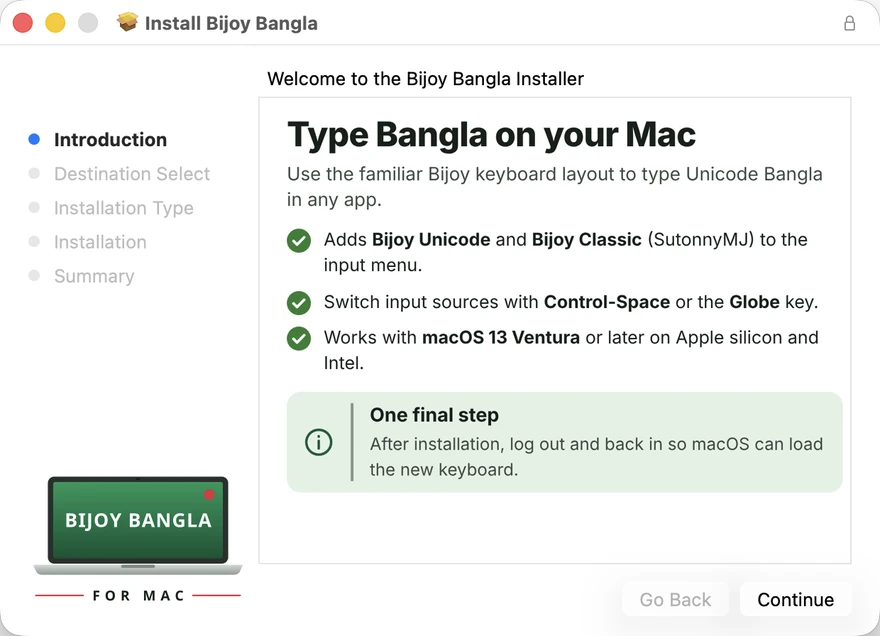
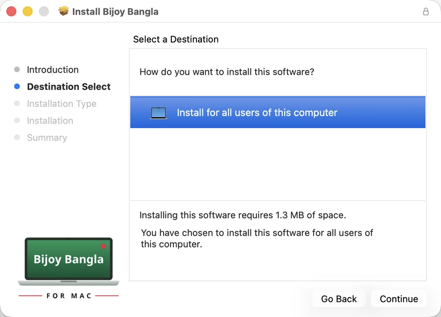
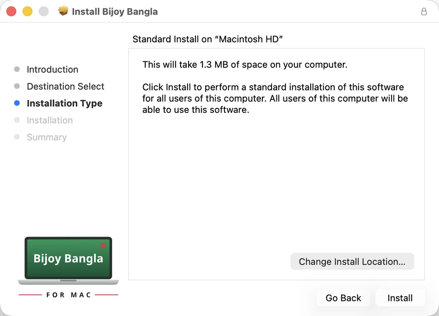
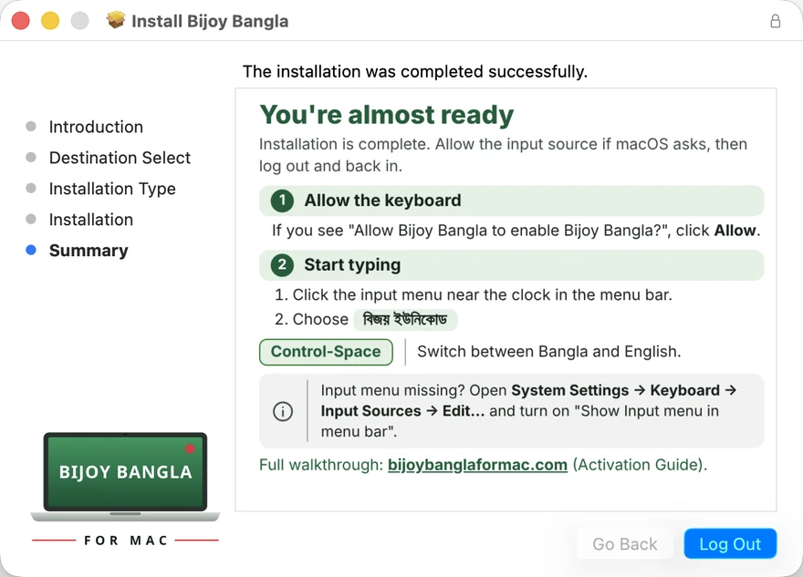

বিজয় ইউনিকোড
আমার সোনার বাংলা
আদর্শ ইউনিকোড বাংলা। যেকোনো বাংলা ফন্টে, সব জায়গায় নির্ভুলভাবে পড়া যায়।
- Facebook, WhatsApp ও Messenger
- ইমেইল ও ওয়েবসাইট
- অন্যদের পাঠানো Word, Pages ও Google Docs ফাইল
বিজয় ইউনিকোডে একটি বাংলা বাক্য টাইপ করার সরাসরি দৃশ্য।
ইনস্টলারের ধাপগুলো শেষ করুন, জিজ্ঞেস করলে ইনপুট সোর্সের অনুমতি দিন, তারপর লগ আউট করে আবার সাইন ইন করুন। ছবিসহ প্রতিটি ধাপ: অ্যাক্টিভেশন গাইড (PDF)।

ইনস্টলারটি খুলে Continue-তে ক্লিক করুন।

“Install for all users” যেমন আছে তেমন রেখে Continue-তে ক্লিক করুন।

Install-এ ক্লিক করুন এবং পাসওয়ার্ড চাইলে আপনার Mac এর পাসওয়ার্ড দিন।

জিজ্ঞেস করলে Allow দিন, তারপর Log Out করুন। আবার সাইন ইন করে ইনপুট মেনু থেকে বিজয় ইউনিকোড বেছে নিন।
বিজয়ের পরিচিত কী-বিন্যাসই এখানে পাবেন। বাংলা ও ইংরেজির মধ্যে বদলাতে Control-Space বা Globe কী চাপুন। পুরো কী-চার্ট দেখতে ইনপুট মেনু থেকে “Show Bijoy Keyboard Layout” বেছে নিন।
নিজের কীবোর্ড দিয়ে বক্সে টাইপ করুন, অথবা নিচের কী-তে চাপুন। প্রতিটি কী-এর দ্বিতীয় অক্ষর দেখতে Shift চেপে ধরুন। বাংলা ও ইংরেজির মধ্যে বদলাতে Esc চাপুন।
কী একই, লেখার ধরন দুটি। লেখাটি কোথায় ব্যবহার করবেন, সে অনুযায়ী মোড বেছে নিন।
আমার সোনার বাংলা
আদর্শ ইউনিকোড বাংলা। যেকোনো বাংলা ফন্টে, সব জায়গায় নির্ভুলভাবে পড়া যায়।
Avgvi ‡mvbvi evsjv
ক্লাসিক বিজয় এনকোডিংয়ের লেখা। SutonnyMJ ও অন্যান্য MJ ফন্টে এটি আমার সোনার বাংলা হিসেবে দেখায়; অন্য ফন্টে দেখায় ওপরের লাইনের মতো।
Bijoy Bangla for Mac is a free, open-source Bangla input method for macOS, built around the familiar Bijoy layout. Type in Microsoft Word, Pages, Google Docs, Safari, Chrome, Facebook, WhatsApp, Messenger, Gmail and other Mac apps.
বিজয় বাংলা ফর ম্যাক macOS এর জন্য একটি বিনামূল্যের, ওপেন-সোর্স বাংলা ইনপুট মেথড, যা গড়ে উঠেছে পরিচিত বিজয় লেআউটকে ঘিরে। MacBook, iMac বা Mac mini-তে Microsoft Word, Pages, Google Docs, Safari, Chrome, Facebook, WhatsApp, Messenger ও Gmail-সহ সব অ্যাপে বাংলায় লিখুন।
হ্যাঁ। কোনো ফি, ট্রায়াল, অ্যাকাউন্ট বা বিজ্ঞাপন নেই। সোর্স কোড MIT লাইসেন্সে GitHub-এ উন্মুক্ত।
হ্যাঁ। বিজয় ইউনিকোডে লেখা বাংলা আদর্শ ইউনিকোডে সংরক্ষিত হয়, তাই বাংলা সমর্থন করে এমন সব ব্রাউজার এবং Word, Pages, WordPress, Facebook-সহ অন্যান্য অ্যাপে তা ঠিকভাবে দেখায়।
Microsoft Word, Pages ও Google Docs এর জন্য সবচেয়ে উপযোগী ফন্ট Noto Sans Bengali। Google এর এই বিনামূল্যের ফন্টটি যেকোনো আকারে পরিষ্কার পড়া যায় এবং যুক্তাক্ষর নির্ভুলভাবে দেখায়। ফন্টটি একবার ইনস্টল করে নিন, তারপর বাংলা লেখা সিলেক্ট করে ফন্টটি বেছে দিন।
SutonnyMJ ও অন্যান্য MJ ফন্ট কেবল বিজয় ক্লাসিকের জন্য। বিজয় ইউনিকোডের লেখায় এগুলো ব্যবহার করলে ভুল অক্ষর দেখাবে।
হ্যাঁ। ইনপুট মেনু থেকে বিজয় ক্লাসিক বেছে নিন এবং ডকুমেন্টে SutonnyMJ বা অন্য কোনো MJ ফন্ট দিন। চেনা বিজয় কী-তেই টাইপ করবেন, আর লেখা তৈরি হবে ছাপাখানায় প্রচলিত ক্লাসিক বিজয় এনকোডিংয়ে। ওয়েবসাইট ও ইমেইলের জন্য বিজয় ইউনিকোড ব্যবহার করুন।
macOS 13 Ventura ও পরবর্তী সব সংস্করণে, অর্থাৎ macOS 14 Sonoma, macOS 15 Sequoia ও macOS 26 Tahoe-তেও চলে। Apple silicon (M1, M2, M3 ও M4) এবং Intel, দুই ধরনের Mac-ই সমর্থিত।
এই ইনপুট মেথডটি Mac App Store-এ দেওয়া হয় না, তাই এটি সরাসরি এই ওয়েবসাইট থেকে ডাউনলোড করতে হয়। ইনস্টলারটি Developer ID দিয়ে সাইন করা এবং Apple এর নোটারাইজেশন প্রক্রিয়ায় যাচাই করা। খোলার সময় macOS নিজেই ইনস্টলারটি পরীক্ষা করে।
System Settings কেবল সাধারণ কীবোর্ড লেআউটের ছবি দেখায়। বিজয় বাংলা একটি ইনপুট মেথড, যা কার-চিহ্নের সঠিক অবস্থান ও যুক্তাক্ষর তৈরির কাজ সামলায়; তাই সেখানে ছবির বদলে একটি তথ্যবার্তা দেখা যেতে পারে। কী-চার্ট দেখতে মেনু বারের ইনপুট মেনু থেকে “Show Bijoy Keyboard Layout” বেছে নিন।
মেনু বারের ইনপুট মেনু খুলে “Uninstall Bijoy Bangla” বেছে নিন। পাসওয়ার্ড চাইলে Mac এর পাসওয়ার্ড দিন, তারপর লগ আউট করে আবার সাইন ইন করুন।
কোন কী চেপেছিলেন এবং কোন বাংলা লেখা আশা করেছিলেন, তা লিখে GitHub-এ একটি issue খুলুন।